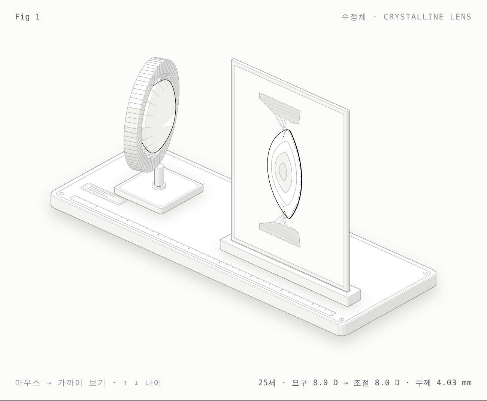

수정체 Crystalline lens
모양체근이 수축하면 소대가 풀리고 수정체가 두꺼워진다 — 60세에서는 근육은 같은데 수정체가 따라가지 못한다(노안)
수정체낭, 상피, 피질, 성인·태아·배아핵, 섬모소대, 모양체
안검·눈물길·안와·외안근을 받침대 위의 정밀 해부 모형으로 그립니다. 치수와 움직임은 출처가 있는 해부학 수치에서 나옵니다.

모양체근이 수축하면 소대가 풀리고 수정체가 두꺼워진다 — 60세에서는 근육은 같은데 수정체가 따라가지 못한다(노안)
수정체낭, 상피, 피질, 성인·태아·배아핵, 섬모소대, 모양체
거근을 당기면 Whitnall 인대를 지렛목 삼아 눈꺼풀이 올라가고 MRD1·거근 기능(mm)이 읽힌다
피부·안륜근, 안와격막, 안와지방, 상안검거근·건막, Whitnall 인대, 뮐러근, 검판, 결막
눈 깜빡임마다 눈물이 관을 따라 코 안으로 흘러가는 배관
눈물점, 눈물소관, 총눈물소관, 눈물주머니, 코눈물관, Hasner 판막, 하비도
근육이 수축하면 안구가 돌고, 부착 위치(Tillaux 나선)가 회전축을 정한다
안와 골벽, Zinn 고리, 직근 4·사근 2, 도르래, 시신경, 안구
닫힌 원뿔 안에서 늘어난 부피가 안구를 앞으로 밀어내는 양
외안근 비대, 안와지방 증가, 안와 용적, 안구 위치(Hertel)